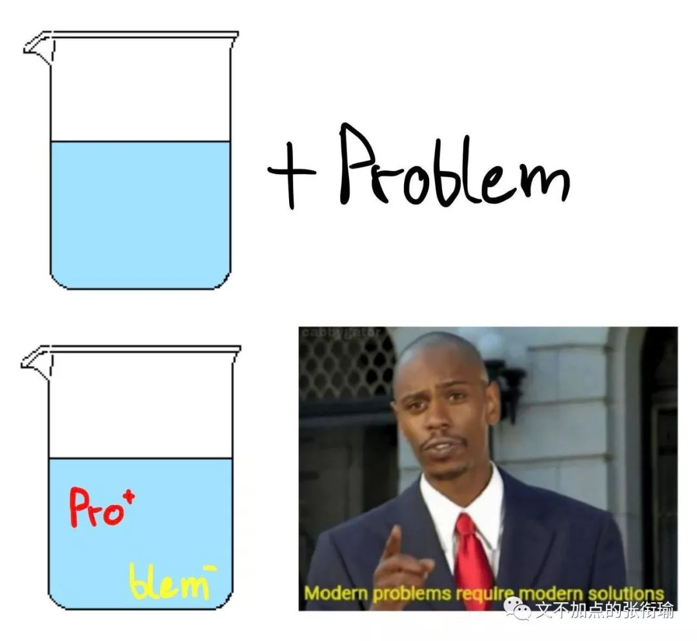
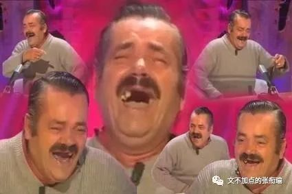
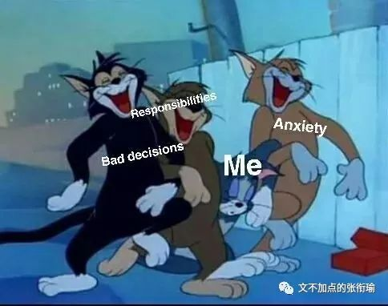

本文是张衔瑜第119篇推文
共计1154个字
下午在寝室里肝图，调来调去。也许有在变好吧，“万里长征还剩最后一步”，但也还是有在无定河边烹煮排骨汤的迷离感。

有学妹在问出自行车的事。想起还有一辆从长沙带过来的车，不如正好出掉。
晚餐回寝之后，找钥匙。
但钥匙在哪里呢？
凭着依稀的记忆，在书垛之间翻来翻去。
没找到。
没找到也没关系吧。
反正是很简单的锁，那就去先把车找到。
骑小驴出去寄回了一个快递，然后在紫菘转了两遭。
都没找到。

把驴停下来。上楼。
找到原来夜骑时候装备的强光手电。
徒步走紫菘停车棚。又走了两遭。
还是没有找到。
更过分的是，我甚至不知道是哪一天不见的。
打开手机，想能不能找到以前给自行车拍的照。
照片的数字签名戳上，有时间，我是这么想的。
记得有一次有电驴之后又心血来潮去夜骑。
回来之后修过一张很好看的黑白在。
相册，也找不到。
和学妹说找不到了，你问别人吧。你问别人吧。
你，问别人吧。
人们会一时心气地，去做一些不可捉摸的事情。
把刚刚从卖花人那里讨的种子，随手播种在马路旁边。一年之后过来，会自己成长成一束雏菊？还是一片路基因此而塌陷？江河湖海，最可能的事情是，什么也没有发生。好重的赌徒心态。
问题总是有很长一段积累的。
比如网络博主表面上看起来只是因为一条恶毒评论而疯狂开麦回怼让人感受到什么叫做网络暴力。也许，在此之前已经被各式评论骚扰得很是心累；
比如有人看到马夫在抽打的时候，跑过去抱着惊马一阵痛哭；
比如有人吃了很多饭之后，有一天果然把胃撑得很大了。
我不是指，某一个阈值前后，必定有一番用进废退。而是问题从肇始，到结果，会很长、会潜伏。
晚上准备发一条寻物启示之类的。我想说是一辆显眼的、有明显特征的自行车。
那么突出的可以折叠山地车模样，还有长沙骑行联盟的唯一编号。前后禧玛诺碟刹，不管是哪个骑车都会感觉刹车的力度很有安全感。还有我专门配的宽一些的轮胎，虽然以前夜骑岳麓山的时候有不少耗损，但现在如果只在校园里的话也完全足够。
后面的，是我刚刚才写的。
没有发的原因是因为，我才写到第一二个形容词，就已经怕了。“显眼的、有明显特征的”，话语就像是人们在描述自己的前女友/前男友。那个人是谁呢？是在一堆人里面就是会出来把你眼睛戳瞎的那个。
描述自行车特征的时候，完全可以描述出前轮什么样、后轮什么样，什么牌子的刹车又经历过哪些赛道公路。但甚至不知道钥匙不见了、不知道车不见了，不知道，不知道是哪天不见了。
“我有一个朋友”，也能类似地这么说出来别人喜欢什么、有什么特征。但是不知道哪天开始就没有了感觉。从“清泉石上流”，变成了“水”。
离过去越远，是离自己越近了？还是离自己越远了？
如果离自己越近，那么之前的又算在哪里？
如果离自己越远了，那么为什么会被生活的浪潮拖在沙滩上拉出一道道划痕？
不少写点的字，敢情大家都以为我每篇都至少3K+
图的话，请便
